Toward Skill-Native LLMs：用技能熵评测并训练长程推理
这篇论文研究的不是模型“会不会数学、代码或规划”，而是模型能否在一条相互依赖的长推理链里及时换挡。论文由 Yinghui He、Ling Yang 等人完成，一作主机构为 Princeton University，合作机构包括 Carnegie Mellon University、University of Toronto、UIUC、Stanford University 与 University of Oxford。论文于 2026 年 8 月 5 日提交至 arXiv，唯一论文入口为 arXiv:2608.05139；代码与数据仓库 已核验可访问。核心产物包括有方向的 Skill Entropy、覆盖九个领域和 558 种技能的 Skill²-Bench，以及把技能熵变成奖励的 Skill-Entropy RL。
现实长程任务往往要求模型先完成一种推理，再把其输出带入另一种技能；现有单技能基准却无法说明这种切换本身有多难。即便每个组成技能在隔离评测中都做得不错，模型仍可能沿用上一步的技能和答案形式，因而在组合链上失效。
1. 背景和问题
长程推理经常被简化成“需要更多步骤”，但本文强调，步数只是表象。真实的研究、编码、行程规划或报告写作会在同一个目标下经过不同认知操作：先从表格抽取实体，再进行数值计算，随后满足约束地排程，最后把结果组织成自然语言。后一步不仅换了领域，还依赖前一步的输出。模型若只是把上一步继续做下去，哪怕那个局部技能本身很强，也会生成形式正确却任务错误的回答。作者把这种对象称为 Cross-Skill Long-Horizon Task，关键约束是相邻步骤来自不同领域、问题共享一个场景，而且第 i 步需要第 i−1 步的结果。
过去的评测主要覆盖两端。一端是 MATH、LiveCodeBench、MMLU-Pro、ZebraLogicBench、NaturalPlan 等单域基准，它们能说明模型在隔离条件下的数学、编码、知识、逻辑和规划能力，却看不到“从 A 切到 B”时新增的干扰。另一端是 GAIA、AgentBench 等完整 Agent 环境，它们测试长轨迹、工具调用和程序性流程，但失败来源混在检索、工具、记忆、环境反馈与技能组合之中，难以单独回答哪一次技能切换最难。已有组合任务也常把所有组合视作同等困难，没有一个任务级标量来校准不同技能序列。
这里有两个容易混淆的问题。第一，领域难度不等于切换难度。Science 题单独做可能准确率很高，但科学推理所需的表达和知识结构与前后技能差异大，切入或切出仍可能困难；相反，一个单独很难的领域未必总造成高切换代价。第二，切换是有方向的：从规划到信息抽取与从信息抽取到规划会处在不同上下文、继承不同答案模态，因此不能用对称的技能相似度替代。
论文据此提出三个连贯问题：能否用固定参考模型的行为，为每个有向技能对定义可比较的切换难度；能否据此生成低、中、高难度且步骤真正依赖的任务，从十二个模型中观察稳定的性能梯度；如果模型失败是因为没有在正确时刻提交正确技能，能否把金标准技能链与预测技能链的结构差异放进 RL 奖励，而不仅在整条回答结束时给一个对错信号。
这套问题设定的价值在于把“组合能力差”拆成一个可测对象，但它也预先限定了结论范围。Skill Entropy 是参考模型正确率比值形成的操作性指标，不是信息论上从真实分布推导的熵；Skill²-Bench 的技能标签来自预设本体、LLM 标注、聚类与人工复核；Skill-Entropy RL 又要求模型显式输出技能名。因此论文证明的是：在这套技能本体和任务生成机制下，切换难度可以预测失败并成为有效训练信号，而不是证明所有长程推理都能被离散技能序列完整解释。这个边界很重要：技能标签是解释层，不能被误当成模型内部真实存在的模块。
对推荐系统研究者而言，这个问题也不遥远。一个复杂推荐 Agent 可能依次做用户意图归纳、约束提取、候选检索、偏好冲突消解和解释生成；排序链路也会在行为统计、内容语义与业务约束之间换表示。传统离线指标往往分别测各模块，却较少把“从用户状态判断切到候选选择”的过渡作为独立难度。本文提供的更重要视角不是照搬 558 种技能，而是把跨阶段接口失误从模块内准确率中分离出来。它也改变数据采样方式：与其只增加每个单域的难题，可以优先收集“两个模块单独都对、串起来却错”的反事实对，并把转换方向、上一步输出形式、上下文长度分别控制。这样得到的改进目标比笼统增加长轨迹更容易归因，也更便于设计针对性消融；端到端成功率无法定位的接口风险也因此变得可观测。
2. 方法
2.1 Skill Entropy：从单技能能力到有方向的切换代价
论文先把长度为 L 的跨技能任务写成问题—答案对序列，并给每一步附技能标签： 符号解释：τ 是完整任务，q_i 和 a_i 分别是第 i 步问题与金标准答案，L 是步骤数。与普通多题拼接不同，后续问题必须依赖前一步答案，并由统一场景连接。
符号解释：μ(τ) 是任务对应的技能序列，s_i 是第 i 步使用的规范技能；相邻技能来自不同领域。这个序列同时是 benchmark 难度计算和 RL 奖励的结构化金标准。
固定一个参考模型后，作者分别测技能 s_a、s_b 单独出现时的平均正确率，以及二者按 s_a→s_b 组成两步任务时的平均逐步正确率。参考模型承担统一测量标尺而非参赛者角色，所有被测模型共享同一难度坐标。加入 α=0.1 的 Laplace 平滑后，有向技能熵定义为：
符号解释：分子代表两个技能隔离使用时的平均基线，分母代表按指定方向连起来后的准确率。如果组合几乎不增加干扰，比值接近 1；跨技能正确率明显降低时，比值大于 1。分母按方向采样，所以 SkE(s_a,s_b) 通常不等于 SkE(s_b,s_a)。平滑能避免低正确率或零值令比值爆炸，但也意味着绝对数值会受 α 影响。
直接估计 558 个技能的所有有序对需要约 3.1×10^5 组评测。论文把“离开源技能”和“进入目标技能”近似为可乘的两个因素。它把技能对矩阵压缩成技能—领域与领域—技能两张矩阵，保留方向性但主动牺牲特定技能对交互；这也是其可扩展性的来源： 符号解释：d_s 是技能 s 的来源领域。第一项测从具体技能 s_a 切入目标领域的代价，第二项测从源领域落到具体技能 s_b 的代价。复杂度由 O(|S|²) 降到 O(|S||D|)，九域下约为五千组每方向评测。代价是引入乘法可分假设：若某个特定技能对存在领域均值无法表达的相互作用，近似会把它抹平。
任务级熵则沿技能链平均所有相邻切换： 符号解释：分母 L−1 是切换次数，求平均后不同长度任务得到可比较的标量。作者再按经验分布阈值 (θ_l, θ_h) 划分低、中、高熵。平均会提高可用性，却也可能遮蔽单次极难切换；两个平均熵相同的任务，最坏一步和难度分布可能很不同。
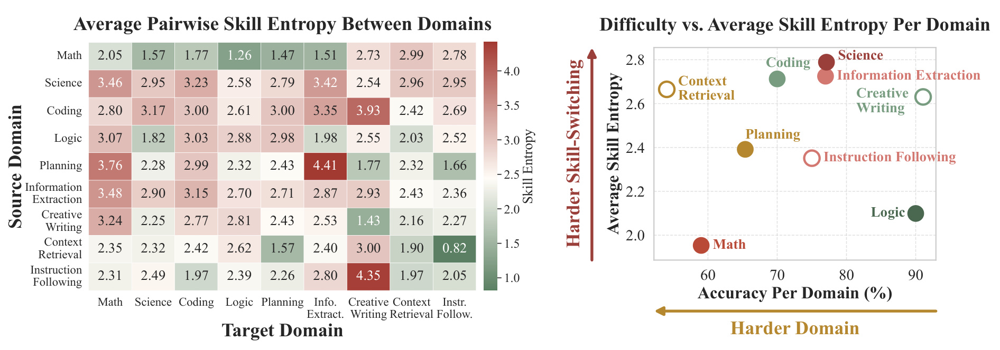
Figure 2 左侧的行是来源域、列是目标域，矩阵明显不对称。例如 Planning→Information Extraction 的均值达到 4.41，而反向 Information Extraction→Planning 为 2.71，说明顺序确实改变干扰。右侧横轴是单域准确率，纵轴是平均技能熵；Science 位于高准确率、高熵区域，Logic 则准确率较高难度却熵较低，二者没有简单负相关。这支持论文最关键的区分：模型“会不会某领域”与“能否从别的领域切换过去”是不同能力。需要注意，热图来自 Claude-opus-4.7 的估计和技能—领域分解，不能被解读为所有模型共享的固有心理距离；矩阵还混合了技能频率与领域评分器差异，最好结合替代参考模型结果再读。
2.2 Skill²-Bench：技能库、序列采样与场景化任务
Skill²-Bench 的构造按原文分三段。第一段建立技能库：Math、Science、Coding、Logic、Information Extraction、Planning 六个可验证域分别来自 OpenR1-Math、MMLU-Pro、LiveCodeBench、ZebraLogicBench/Guru-RL、WikiTable/WebSRC 和 NaturalPlan。LLM 为种子题标 3—5 个细粒度技能，再用句向量聚类同义标签，最后人工复核粒度。Creative Writing、Context Retrieval、Instruction Following 没有固定种子集，先由 LLM 生成技能清单，再做同样的聚类与复核。最终九域共 558 个技能。
第二段用 Claude-opus-4.7 估计熵表。每个技能和领域各采五个单技能样本，每个技能—领域组合又按两个方向各采五个两步样本，温度为 0。Math 用数值/符号等价，Coding 用沙箱单测，Science 用选项匹配，Logic 用网格一致，Planning 用约束满足，Information Extraction 用精确或数值匹配；三个开放域使用随问题生成的 rubric 和 LLM judge。固定参考模型使所有被测模型共享一把难度尺，而不是让强模型和弱模型各自改变题目难度。
第三段先从 2—10 抽任务长度，再按目标熵层做拒绝采样，要求相邻技能来自不同域。对于可验证技能，proposer 只改写种子题的场景和措辞，保持逻辑、数值、选项与答案；对于开放技能，模型在当前场景和前序答案条件下同时生成问题与评分 rubric。独立 verifier 检查四项：答案是否保持、所有步骤是否属于同一场景、每个后续步骤是否真依赖上一答案，以及 earlier context 是否泄漏 later answer；三次再生仍不合格就丢弃。
这条流水线避免了“把无关题机械拼接后宣称长程”的问题，但依赖是由 proposer 写进文本的，不一定等价于真实交互中的状态依赖。尤其开放域问题与 rubric 同源生成，可能让语言风格和评分标准共同偏向生成器。训练数据只用六个可验证域，开放域仅作评测，这一点让开放域提升更有迁移意味，同时也让其结论更依赖 judge 校准。
2.3 Skill-Entropy RL：把评测尺度变成训练信号
训练阶段要求模型先输出一个 <think> 块，再为每一步交替输出 <skill>领域, 技能</skill> 与 <answer>答案</answer>。3,000 条任务由 Qwen3-8B 教师生成结构化轨迹做四轮 SFT，另 6,000 条只用金标准答案和技能链做 GRPO。RL 任务长度为 3—5，测试长度扩到 2—10；因此实验也在检查较长技能链泛化。
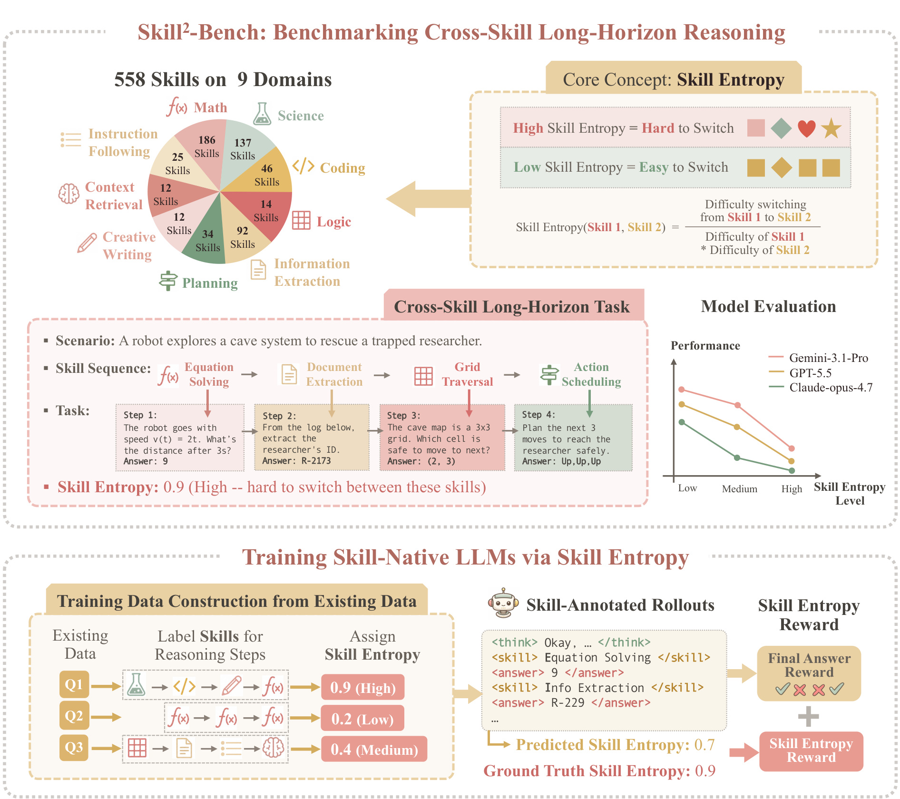
Figure 1 上半部分把九域技能库、跨技能场景、任务熵分层与模型准确率曲线连在一起，下半部分则从现成数据的步骤标注出发，让模型同时提交答案和技能序列，再分别计算最终答案奖励与技能熵奖励。它揭示本文设计的复用点：离线构造的技能熵表既决定 benchmark 的低中高难度，也给预测技能链提供训练信号。图中示例的预测熵 0.7 与金标准 0.9 并不要求技能名逐字相同，实际实现会先做 embedding 最近邻映射，再比较两条链在训练分布中的相对难度。
联合奖励为： 符号解释：r_ans 是答案奖励，r_ent 是技能熵奖励，二者都归一到 [0,1]；默认 λ_ans=0.7、λ_ent=0.3。答案仍是主目标，熵项只塑造中间技能结构。
答案奖励按步骤平均领域评分器： 符号解释：ŷ 是模型完整响应，â_i 是预测答案，eval_{d_i} 是第 i 步所属领域的评分器。结构化格式解析失败时，答案与技能熵奖励都为零，这会同时训练格式遵循。
预测技能名可能写成 integer_arithmetic 而技能库键是 number_theory。作者用 Qwen3-Embedding-0.6B 把预测标签映射到余弦相似度最高的规范技能；相似度低于 0.5 就视为库外，相关切换不给熵奖励。完成映射后，分别计算预测链和金标准链的任务熵，并通过训练集经验 CDF (F) 变成分位秩：
符号解释：预测 SkE 与金标准 SkE 分别来自两条技能链，ρ_hat 与 ρ 是它们在训练熵分布中的分位。使用 rank 而非原始差值使奖励跨难度区间更稳定，并允许语义近似技能替代。但奖励只约束整条链的熵等级接近，不保证逐步技能逐一正确；两个不同技能序列可能有相近平均熵，形成结构奖励的等价类捷径。
GRPO 使用 group size 8、prompt batch 256、actor 学习率 10^-6、固定 KL 系数 10^-3、clip ratio 0.2，并在 8 张 H100 上最多训练 400 次更新。动态采样只让组内奖励方差非零的 rollout 进入优化，以减少全对或全错样本的无效更新。
2.4 从现成数据构造技能链：OpenR1-Math 接入
专用任务天然有金标准技能序列，但作者还测试能否接入普通推理数据。对 OpenR1-Math，Qwen3-8B 把已有 gold trace 切成步骤，为每一步从 Skill²-Bench 技能库中分配标签，并把中间结论作为逐步金标准答案；库外措辞同样经 embedding 映射。随后用公式（4）计算任务熵，原始最终答案仍作为末步答案。6,000 条标注数据进入与主实验相同的 SFT+GRPO 流程。
这一步使 Skill Entropy 从 benchmark 内生标签变成可迁移的数据变换：旧数据不需要重新人工写题，只要有可靠推理轨迹和可验证答案即可。然而，标签质量取决于 Qwen3-8B 对步骤边界和技能名的判断；若 gold trace 省略了隐式步骤，显式技能链可能只是对文本表面的后验解释。论文用下游数学结果证明该近似有用，却没有单独报告技能标注准确率。
3. 实验结果
3.1 Skill²-Bench 主评测：熵升高与跨技能退化
测试集含 300 个任务，在九域和低/中/高熵层之间平衡，长度 2—10。评测覆盖 8 个前沿模型和 4 个开源模型。single-skill 模式把每一步独立询问；cross-skill 模式把完整场景和所有步骤一次输入，要求按顺序回答。每题温度 0.7 采样四次；可验证域用确定性评分器，开放域由 Claude-opus-4.7 按 rubric 打 [0,1] 分。
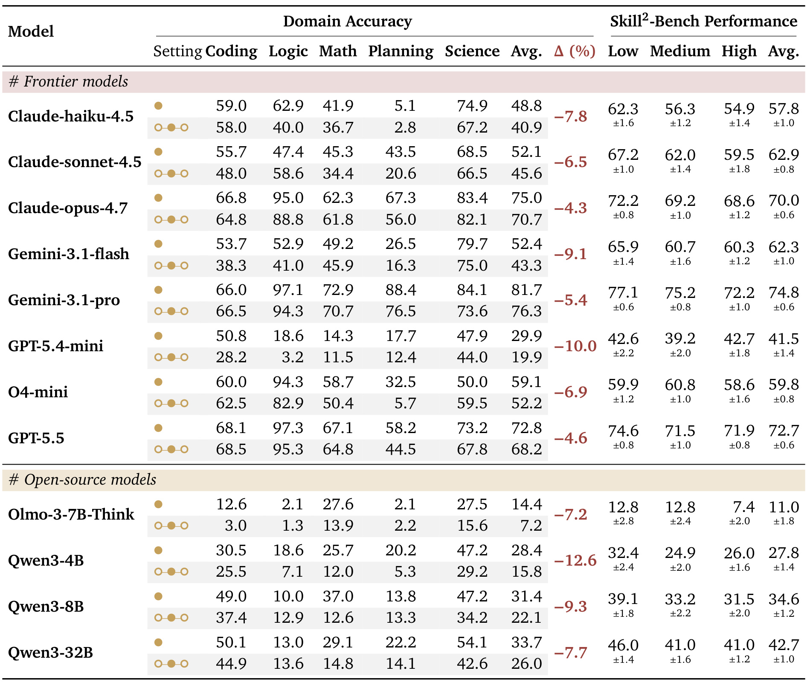
Table 2 显示两条互补趋势。其一，几乎每个模型从低熵到高熵都下降：Claude-haiku-4.5 为 62.3→54.9，Gemini-3.1-pro 为 77.1→72.2，Qwen3-4B 为 32.4→26.0；GPT-5.4-mini 的中高层并非严格单调，是论文明确保留的例外。其二，同一技能放进跨技能场景后，五个大域平均准确率下降 4—10 点，Qwen3-4B 更下降 12.6 点。Planning 往往掉得最重。结果说明熵与难度有稳定相关，但不是完美排序器；误差条、模型例外与领域分布都提醒我们不要把它写成决定律。前沿与开源模型的差距还说明，熵分层对弱模型更敏感，后续比较应同时报告绝对能力与切换斜率，而不能只看高低桶端点。
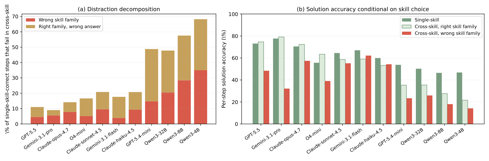
Figure 5 只分析“single-skill 做对、cross-skill 转错”的配对步骤。左图把新错误拆成选错技能族与技能族正确但答案错误；强模型新增错误中有 31%—62% 伴随错误技能族。右图按技能选择条件展示逐步准确率，GPT-5.5、Gemini-3.1-pro、Claude-opus-4.7 等模型在选错技能族时的准确率大致只有选对时的一半。这个结果与因果证明仍有距离：错误技能标签可能和错误答案同源，而非前者单向导致后者；但它确实给训练提供了比“最后答案错了”更具体的诊断轴。图中较弱模型即使选对技能族也可能答错，因此技能选择是必要环节而非充分条件，答案监督不能被结构奖励取代；分解结果也应按任务深度再核验。
3.2 Skill-Entropy RL 的主结果与案例
主训练比较 Base、3K SFT、只用答案奖励的 GRPO，以及 Skill-Distill、SkillRL、STAT 三个技能感知基线。所有 GRPO 对照共享 6K 任务和输入，因此 Skill-Entropy RL 与 vanilla GRPO 的差异最接近对熵奖励的直接消融。
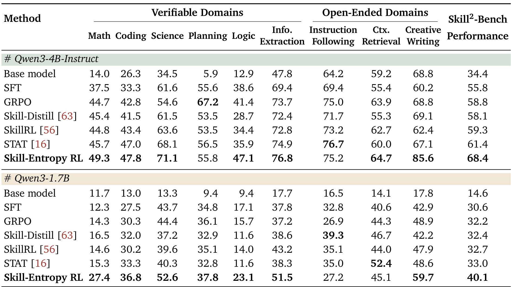
Table 3 的总分最醒目：Qwen3-4B-Instruct 从 base 34.4 提至 68.4，Qwen3-1.7B 从 14.6 提至 40.1。相对同数据 GRPO，提升分别为 9.6 和 7.9 点；相对最强技能基线 STAT，分别高 7.0 和 7.1 点。4B 模型在 Creative Writing 上由 GRPO 的 68.8 升到 85.6，1.7B 在 Math 上由 14.3 升到 27.4。九域并非全部最优，例如 4B Planning 略低于 GRPO，1.7B Instruction Following 只从 26.9 到 27.2；总增益来自多数域而不是每项无条件提升。开放域从未进入 RL 训练，因而其提升比训练域内增益更能支持跨域迁移，但也更依赖 judge 的评分可靠性。
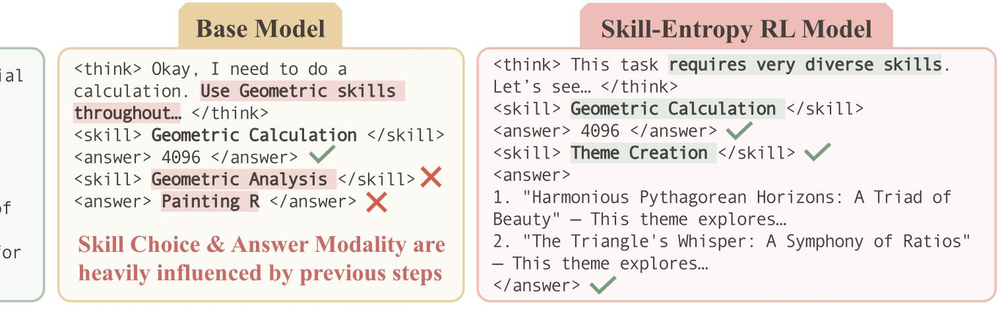
Figure 3 的两步任务先计算三角形画作面积，再为展览创作主题。基础模型第一步选择 Geometric Calculation 后，第二步仍输出 Geometric Analysis 和短答案 “Painting R”，表现出技能与答案模态惯性。训练后模型第二步提交 Theme Creation，并生成长文本创作。案例与 Figure 5 的统计相互呼应：熵奖励并非只提高同一格式下的数值答案，而是在异质步骤之间改变了输出结构。不过这只是一个成功样例，不能据此判断错误技能标签都被修复，真正证据仍是主表与全量错误分析。
作者还比较 base 的 single-skill oracle：Qwen3-4B 为 62.2，1.7B 为 37.1，而训练后 cross-skill 总分为 68.4 与 40.1。它说明提升不只是学会某个提示格式，至少在该测试协议下还伴随底层任务能力增长。但开放域 single-skill 不可直接定义，oracle 行包含的开放域对照口径需要谨慎理解，不能等同于严格的独立能力上界。
3.3 参考模型稳健性与人工一致性
Skill Entropy 最大的测量风险是：难度由 Claude-opus-4.7 定义，被测模型会不会只是被迫服从 Claude 的失误结构。作者用 Gemini-3.1-pro 与 GPT-5.5 重算熵表并重新分桶。
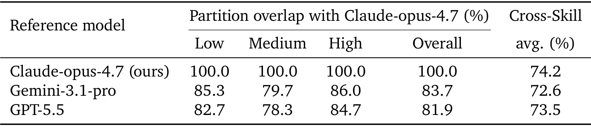
Table 7 中，以 Claude 分桶为基准，Gemini 的 Low/Medium/High 重合率为 85.3%/79.7%/86.0%，总体 83.7%；GPT-5.5 为 82.7%/78.3%/84.7%，总体 81.9%。三者两步跨技能平均准确率为 74.2%、72.6%、73.5%，只差约两个点。headline 级别的低中高结构因此不是 Claude 独有，但中档只有约八成重合，仍有相当数量任务会因参考模型改变难度标签。极端桶比中间桶稳定也符合阈值分桶直觉：靠近边界的任务最容易在参考模型变化时跨桶，报告均值时应附带这一不确定性。表中只比较三种强模型，弱参考模型是否会因单技能基线过低而扭曲比值仍未回答，也未测试跨版本漂移。
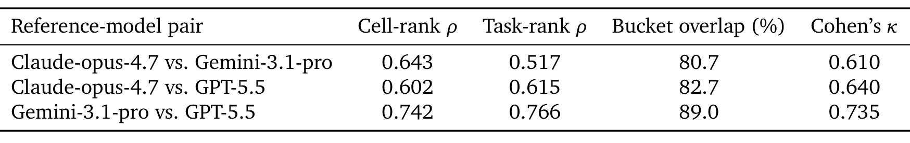
Table 8 进一步显示，稳健并不等于高度一致。Claude 与 Gemini 的技能对 cell-rank Spearman 仅 0.643，任务 rank 为 0.517；Claude 与 GPT-5.5 分别为 0.602 与 0.615。Gemini 与 GPT-5.5 反而更接近，task-rank 达 0.766、分桶重合 89.0%、κ=0.735。也就是说，三分桶足以支持宏观趋势，但若把熵当作精确连续标签排序个别任务，参考模型噪声会更明显；RL 中使用 CDF rank 只能处理尺度，不会消除排序差异。更稳妥的训练版本可以使用多参考模型秩的中位数，或按一致度降低争议任务的熵奖励权重，同时公开各熵边的置信区间并复核临界任务。
这些相关系数还应和熵估计的 Monte Carlo 方差一并公开。
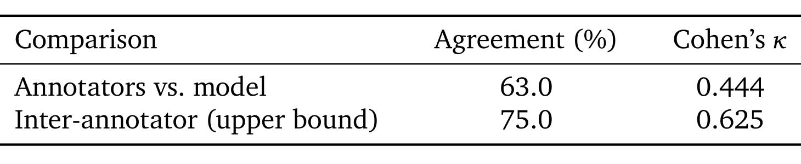
Table 9 的人类实验让四位与论文无关的标注者在随机展示的 9 个任务中选出最难和最易各 3 个。人与模型的一致率为 63.0%、Cohen’s κ=0.444，而标注者间上界是 75.0%、κ=0.625。这个差距表明熵标度确实捕捉到部分人类可感知的切换难度，但远未到“人类定义”的程度。更重要的限制是样本只有九题；它适合作为外部效度的初步检查，不能支撑跨九域的精细心理测量结论。标注任务还是强制选择极端三题，没有给连续难度分数；未来应扩大题量并按转换方向分层，才能判断人类究竟认同哪些技能边。还应记录标注者自身专业背景，因为数学到写作的主观切换感可能随经验、母语与领域熟悉度变化。
换言之，这项人类实验更像可行性探针，而不是最终标定。
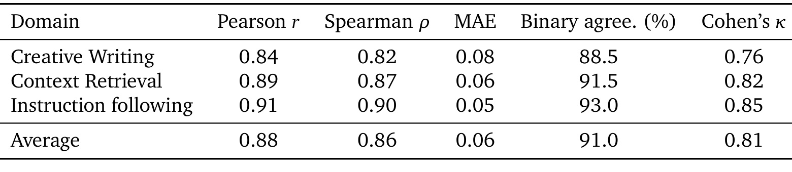
Table 10 处理另一个风险：Creative Writing、Context Retrieval、Instruction Following 的问题和 rubric 都依赖前序场景，无法抽出做可比 single-skill 题。作者每域抽 200 个跨技能步骤，由三位人工按同 rubric 复评分。LLM judge 与人工均值的 Pearson/Spearman 平均为 0.88/0.86，MAE 0.06，阈值 0.5 后二值一致率 91.0%、κ=0.81。测量一致性较强，但 judge 与任务生成都在类似语言范式内，且主实验评审模型本身也是熵参考模型，仍可能有共享偏差。三域中 Creative Writing 的相关和二值一致率最低，也符合开放创作 rubric 比格式遵循更主观的预期。
3.4 奖励消融、附加基座与外部泛化
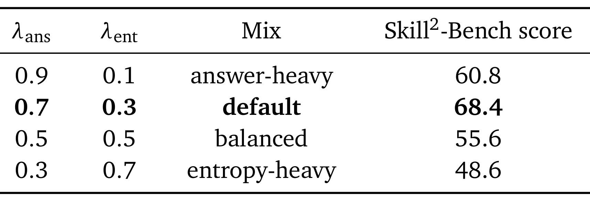
Table 13 固定 λ_ans+λ_ent=1。默认 0.7/0.3 得 68.4；熵项降至 0.1 时为 60.8，说明它不是可忽略的小正则；改为 0.5/0.5 时降到 55.6，熵主导的 0.3/0.7 只剩 48.6。性能在两侧都退化，且熵过重的下降更陡。结合 GRPO 的 58.8，可以判断结构奖励有效的前提是答案奖励继续充当主任务，避免模型通过匹配技能链难度而牺牲实际解题。消融只有单一基座和四个离散权重，峰值是否稳定仍需多随机种子与局部细扫确认。进一步还要分别报告答案奖励、技能标签正确率和总奖励曲线，确认较高总分不是格式合规率单独上升造成的；若迁移到推荐系统，权重也应随业务损失尺度与延迟反馈窗口重新校准。
因此默认权重不能未经复核直接迁移到另一任务分布。
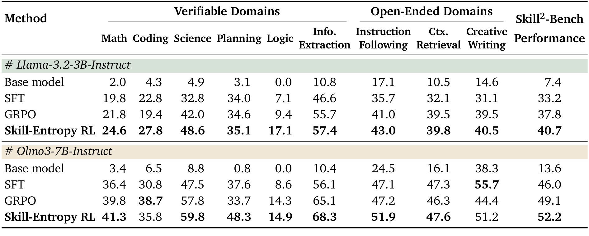
Table 15 把同一数据和训练配置迁移到两种非 Qwen 基座。Llama-3.2-3B 的总分由 base 7.4、SFT 33.2、GRPO 37.8 提至 40.7；Olmo3-7B 由 13.6、46.0、49.1 提至 52.2。两者都在总体上复现优势，但并非所有领域一致：Llama 的 Planning 几乎与 GRPO 相当，Olmo 的 Coding 低于 GRPO。它削弱了“只适配 Qwen 输出风格”的解释，却没有消除训练配方、教师标注和同一技能库共同带来的耦合。不同模型没有报告方差或多种子，三点左右的总分差仍需误差区间支持；更大参数规模是否仍有边际收益、是否出现收益饱和也没有测试。
这部分证据支持跨架构复现，但还不支持规模律判断。
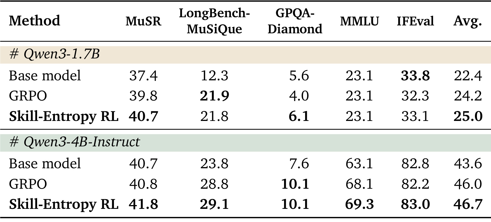
Table 16 覆盖未参与生成或训练的 MuSR、LongBench-MuSiQue、GPQA-Diamond、MMLU 与 IFEval。1.7B 上 Skill-Entropy RL 平均 25.0，高于 GRPO 24.2 与 base 22.4；4B 上为 46.7，高于 46.0 与 43.6。增益较 Skill²-Bench 小很多，且 1.7B 的 LongBench-MuSiQue 21.8 略低于 GRPO 21.9，但平均分与几乎所有项目没有遗忘。合理表述是“技能熵训练具有温和外部迁移”，而不是已经获得普适的长程推理能力。五项简单平均还掩盖了任务规模和方差差异，最好逐任务做显著性检验并给出置信区间、样本数和评测方差。
单项最好结果也不应替代平均增益与失败项的共同报告。
3.5 OpenR1-Math 可插拔实验
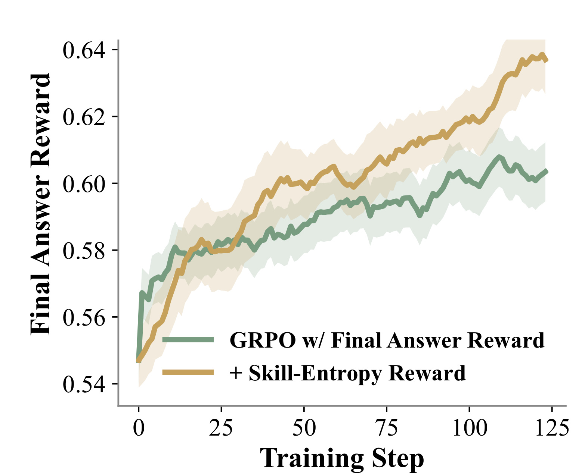
Figure 4 的绿色 vanilla GRPO 在早期提升略快，约 50 步后围绕 0.59—0.60 波动；金色熵奖励曲线在约 30 步后超过它，并继续升至约 0.64。阴影显示 rollout 波动不小，但后半程间隔持续存在。这支持熵项在最终答案奖励进入平台期后仍提供结构梯度。曲线只展示 final-answer reward，而非独立技能标签准确率，因此无法区分模型是更会切换、正则化更好，还是训练动态因额外奖励改变。图中也没有单独标出多个随机种子，阴影的确切统计口径需要代码复核，不能仅凭末端视觉间隔估计显著性。若熵奖励只是提高探索多样性，类似曲线也可能出现，因此还需控制等强度随机辅助奖励并比较技能标签准确率。
训练曲线的价值在于显示差异何时出现，而不仅是最后一点。
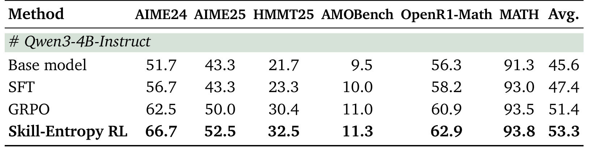
Table 11 给出下游终点：AIME24 66.7、AIME25 52.5、HMMT25 32.5、AMOBench 11.3、OpenR1-Math 62.9、MATH 93.8，六项都高于 GRPO；平均 53.3，相对 GRPO 51.4 提升 1.9 点，相对 base 45.6 提升 7.7 点。绝对增益不大，却跨六项同向，说明现成轨迹的技能后标注并非只制造 benchmark 内格式收益。仍需与“增加任意过程级辅助奖励”比较，才能确认收益专属于熵结构而非额外密集监督。AMOBench 的绝对准确率仍只有 11.3，方法没有消除高难数学瓶颈；其作用更像稳定增益而非能力跃迁，实际价值取决于标注、映射与训练额外成本。
六项同向使偶然性解释更弱，但仍需要多个随机种子验证。
4. 总结
4.1 我的判断与工程启发
本文最扎实的贡献是把一个常被含糊称为“组合能力”的现象拆成可操作闭环：固定参考模型估计有向切换代价，按任务熵分桶建 Skill²-Bench，再让模型显式提交技能链并用熵 rank 对齐做 RL。主评测、错误分解、两种 Qwen 尺度、两个附加基座、OpenR1-Math 和外部基准给出多层证据。最应保守之处是，熵值仍是特定技能本体与参考模型下的代理量，成功不能直接外推到开放世界 Agent 的所有状态转换。
对推荐系统，可以迁移的是“接口级难度”观念。多阶段推荐 Agent 可把意图理解、检索、约束检查、重排和解释视作技能状态，离线比较模块隔离成功率与串联成功率，找出高干扰的有向转换。训练时未必需要输出人类可见技能标签，也可以把路由器、工具选择或阶段状态映射成结构序列，以主业务/任务奖励为主、转换一致性为辅。特别适合诊断长会话中上一轮答案模态对下一轮召回、排序或工具选择的惯性；但线上使用前必须确认技能本体稳定、标签不会泄漏用户隐私，也不能让结构奖励压过真实满意度。
4.2 局限与后续跟进
主要局限至少有五项：
- 熵表依赖 Claude-opus-4.7；替换模型后分桶虽有八成以上重合，任务排序相关仍只有中等水平。
- 558 技能的标签、聚类与粒度受 LLM 和人工本体影响，跨域同义技能与细粒度相互作用会被 skill→domain 分解压平。
- 任务由 proposer 场景化，开放域问题、rubric 与 judge 存在共享生成偏差；人类难度实验仅九题。
- 熵奖励只对齐整条技能链的难度 rank，不逐步强制技能正确，可能出现不同链同熵的奖励捷径；显式 skill 标签还增加输出与解析开销。
- 训练使用 8×H100、教师轨迹和 9K 合成任务，论文没有给出技能标签准确率、数据构建总成本或真实工具环境中的线上验证。
后续最值得做三组实验。第一，公开熵表和数据后，用不同参考模型集合或 bootstrap 估计每个技能对的置信区间，比较平均熵、最大切换熵与路径累积熵谁更能预测失败。第二，增加逐步技能准确率、答案条件互信息和格式错误率，与同预算的 process reward、随机辅助标签、直接技能交叉熵做对照，排除“任何密集信号都有效”的解释。第三，在推荐/搜索 Agent 上把工具调用和阶段路由视作技能序列，构造真实依赖而非文本改写任务，观察离线切换诊断是否能预测长会话成功率、用户满意度与推理成本。